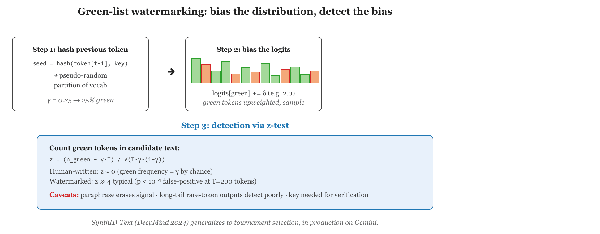

"Mark every other token green and pray the editor does not paraphrase. This is the entire LLM-watermarking literature in one sentence."
Token, Green-List-Veteran AI Agent
Text watermarking embeds a statistical signal into a model's output that is invisible to readers but detectable by anyone with the right key. The breakthrough algorithm, Kirchenbauer et al.'s 2023 "green-list" scheme, biases each token's probability distribution toward a pseudo-randomly chosen subset of the vocabulary. SynthID-Text from Google DeepMind, deployed in production across Gemini in 2024, generalizes the green-list idea to a tournament-based scheme with better detectability per token. This section walks through the algorithms, gives working code, analyzes robustness, and explains the limits, why even a well-designed text watermark is not a panacea, and where it sits in the broader provenance stack.

Prerequisites
This section assumes the LLM token-level sampling vocabulary from Section 6.6, the basic statistical-hypothesis-test mechanics, and the provenance framing from Section 54.1.
54.2.1 The Core Idea: Bias the Distribution, Decode the Bias
Kirchenbauer et al.'s 2023 green-list watermark works by quietly partitioning the model's vocabulary into "green" and "red" tokens at every step and nudging the model to prefer green ones. To a human reader, the output looks identical. To a detector that knows the seed, the green-token rate gives the watermark away in a few hundred tokens. The mathematics are essentially the same trick magicians use with marked playing cards, except the cards are tokens, the deck is the entire vocabulary, and the magician is OpenAI.
Imagine you are generating text one token at a time. At each step, the model has a probability distribution over the vocabulary. The trick is to partition the vocabulary into two sets, call them green and red, before each step, in a way that depends pseudo-randomly on the previous token. You then add a small bonus δ to the logits of green tokens and renormalize. The model still picks tokens that are good completions, but it has a measurable preference for green tokens at every step.
To detect the watermark on a piece of text, you re-derive the green-list partition for each position, count how often the actual chosen token was on the green list, and run a statistical test. If the green-token rate is much higher than the chance baseline (50% by default for a 50/50 partition), the text is watermarked with high confidence; if it's near 50%, it isn't.
54.2.2 The Kirchenbauer Algorithm in Detail
Let $V$ be the model's vocabulary. For each generation step $t$ with previous token $x_{t-1}$, the watermarked decoder modifies the logits as
where $H$ is a keyed hash, $K$ the secret key, $\gamma \in (0,1]$ the green-list fraction (typically $\gamma=0.5$), and $\delta$ the logit bias (typically $\delta = 2$). The next token is sampled from $\mathrm{softmax}(\ell'_t)$.
Algorithm: WATERMARKED-DECODE (Kirchenbauer et al., 2023)
Input: Model p_theta, secret key K, gamma, delta,
prompt x_{<=t0}, max tokens T
Output: Watermarked token sequence x_{t0+1:t0+T}
For t = t0 + 1 to t0 + T:
seed_t = H(x_{t-1}, K)
G_t = Top_{gamma|V|}( Permute(V; seed_t) )
For each v in V:
logits_t(v) = log p_theta(v | x_{<t})
If v in G_t: logits_t(v) = logits_t(v) + delta
x_t = sample from softmax(logits_t)
Return x_{t0+1:t0+T}
Algorithm: WATERMARK-DETECT
Input: Candidate text x_{1:n}, secret key K, gamma
Output: z-score, p-value, verdict in {WATERMARKED, NOT}
s = 0 // count of green-list hits
For t = 2 to n:
G_t = Top_{gamma|V|}( Permute(V; H(x_{t-1}, K)) )
If x_t in G_t: s = s + 1
// Under H_0: s ~ Binomial(n-1, gamma)
z = ( s - gamma * (n-1) ) / sqrt( (n-1) * gamma * (1 - gamma) )
p_value = 1 - Phi(z) // one-sided
verdict = WATERMARKED if z > 4 else NOT
Return (z, p_value, verdict)Under the null hypothesis (no watermark), $s \sim \mathrm{Binomial}(n-1, \gamma)$, so the standardized test statistic is
Detection power grows as $O(\sqrt{n})$: doubling the sample multiplies $z$ by $\sqrt{2}$. For a 50-token sample with $\gamma=0.5$, $\delta=2$, a well-aligned base model gives $z > 4$ (so $p < 10^{-6}$) almost surely. See Kirchenbauer et al., 2023 and the production-grade tournament variant in Dathathri et al., Nature 2024 for SynthID-Text.
import hashlib
import torch
from transformers import AutoModelForCausalLM, AutoTokenizer
class GreenListWatermark:
def __init__(self, model, tokenizer, secret_key: bytes,
gamma: float = 0.5, delta: float = 2.0):
self.model = model
self.tokenizer = tokenizer
self.vocab_size = model.config.vocab_size
self.secret_key = secret_key
self.gamma = gamma
self.delta = delta
def _green_list(self, prev_token_id: int) -> torch.Tensor:
"""Returns a boolean mask of size vocab_size; True = green."""
h = hashlib.sha256(self.secret_key + prev_token_id.to_bytes(4, "big")).digest()
seed = int.from_bytes(h[:4], "big")
g = torch.Generator().manual_seed(seed)
perm = torch.randperm(self.vocab_size, generator=g)
green_size = int(self.gamma * self.vocab_size)
mask = torch.zeros(self.vocab_size, dtype=torch.bool)
mask[perm[:green_size]] = True
return mask
def generate(self, prompt: str, max_new_tokens: int = 50) -> str:
ids = self.tokenizer(prompt, return_tensors="pt").input_ids[0]
for _ in range(max_new_tokens):
with torch.no_grad():
logits = self.model(ids.unsqueeze(0)).logits[0, -1]
green = self._green_list(int(ids[-1]))
logits[green] += self.delta
next_id = int(torch.argmax(logits)) # or sample with softmax
ids = torch.cat([ids, torch.tensor([next_id])])
return self.tokenizer.decode(ids, skip_special_tokens=True)
def detect(self, text: str) -> dict:
ids = self.tokenizer(text, return_tensors="pt").input_ids[0]
n_green = 0
n_total = 0
for i in range(1, len(ids)):
green = self._green_list(int(ids[i - 1]))
if green[int(ids[i])]:
n_green += 1
n_total += 1
expected = self.gamma * n_total
std = (n_total * self.gamma * (1 - self.gamma)) ** 0.5
z = (n_green - expected) / std if std > 0 else 0
return {"n_tokens": n_total, "n_green": n_green, "z_score": z,
"watermarked": z > 4.0}54.2.3 SynthID-Text: Tournament Sampling at Google Scale
SynthID-Text, deployed in production across Gemini in late 2024, generalizes the green-list scheme. Instead of a binary green/red partition, SynthID-Text uses a tournament: at each step, it samples k candidate tokens from the model's distribution, then runs a single-elimination tournament where the winner is determined by a pseudo-random function keyed on context and a secret. The winner is emitted as the next token.
SynthID-Text replaces the single green/red split with a tournament over the model's own sampling. At each step it draws several candidate next-tokens from the true distribution, then a set of keyed pseudo-random g-functions scores the candidates and runs a bracket: candidates compete pairwise and the higher-scoring one advances until a winner is emitted. Because the watermark only chooses among samples the model already considered likely, text quality barely moves, yet the emitted tokens carry a measurable bias toward high g-score winners. Detection re-derives the g-scores from the secret key and tests whether the observed mean exceeds chance, giving stronger per-token evidence than a single green-list at the same distortion.
Key properties from the published DeepMind paper (Dathathri et al., 2024, Nature):
- Distortion-free at low strength. Sampling from the tournament with the right parameters yields a distribution that is statistically indistinguishable from the original, but still detectable in aggregate over >100 tokens.
- Detectable at production thresholds. SynthID-Text achieves >95% detection at false-positive rate <1% on Gemini outputs of 200+ tokens.
- Robust under moderate paraphrasing. Detection survives word-level paraphrasing of up to ~25% of tokens. Sentence-level rewrites by a separate LLM degrade detection more substantially.
Watermarking is most effective at the platform level. Embedding a watermark in every Gemini output is feasible because Google controls the decoder. The same scheme is not deployable for arbitrary open-weight Llama or Mistral fine-tunes, since users can disable the watermarking step entirely. The honest characterization is that text watermarking is a tool against the cooperative-generator threat model (commercial chatbots) and largely useless against the adversarial-generator threat model (jailbroken open-weight deployment).
54.2.4 Robustness: What Watermarks Survive and What Kills Them
Empirical robustness data, mostly from the Kirchenbauer 2023 follow-ups and the SynthID-Text paper, gives a sober picture.
Survives: typo correction, whitespace normalization, minor punctuation changes, light Grammarly-style edits. Adding ~5% of human edits to a 500-token watermarked passage typically leaves the z-score above the detection threshold.
Degrades: word-level synonym substitution (each substitution has ~50% chance of moving the new token off the green list), translation to another language and back. With ~30% of tokens substituted, detection drops to chance.
Defeats: full LLM-based paraphrasing (re-generating the text via another model), sentence reordering, summarization. These are generative attacks, the attacker has access to an LLM, so the cost of removal is the same as the cost of original generation.
![Curve plot showing watermark detection rate (y-axis, 0 to 100%) vs perturbation intensity (x-axis, 0 to 50% tokens edited). Four curves shown: (1) typo edits stay near 99% across the range; (2) word-synonym substitution falls linearly from 99% to 50% by 30% edits; (3) back-translation French-English starts at 80% and falls to 30% by 30% edits; (4) full LLM paraphrase starts at 30% and falls to baseline by 10% edits. Shaded region marks 'realistic adversarial budget' where attackers can spend up to 20% edit equivalent.](images/watermark-robustness.svg.png)
54.2.5 Practical Deployment Considerations
Five issues come up in every production deployment.
Quality tradeoff. A higher δ gives stronger detection at the cost of pushing the output distribution further from the unwatermarked version. SynthID-Text's tournament scheme is designed to minimize this tradeoff; the operating point for Gemini is reported as effectively imperceptible on human-evaluation studies.
Short-text undetectability. All current schemes need ~50-200 tokens to achieve reliable detection. Tweets, single sentences, and code snippets are essentially undetectable. This is a fundamental information-theoretic limit, not an implementation flaw.
Key management. The secret key used for green-list seeding must be guarded. If it leaks, attackers can deliberately produce text with adversarial low z-scores (text that looks watermarked is not), undermining the detector's credibility.
Per-language behavior. Green-list watermarks behave differently across languages because vocabularies have different size and entropy. SynthID-Text reports per-language calibration; if you fine-tune for a new language, recalibrate.
Detection-as-a-service. Google ships a detector that runs server-side: you submit text and a model identifier, the API returns a confidence score. This makes detection accessible without exposing the secret key. Cost is currently negligible (under $0.001 per call). The trade-off is centralization: you must trust Google's API to behave honestly.
A watermark's detection threshold is calibrated against a known model. When the model is fine-tuned (instruction tuning, RLHF, distillation), the distribution shifts and the watermark's per-token detectability changes. Recalibrate after every model update, and version the detector so old text can be validated against the model and key that produced it. Failing to do this gives the worst possible failure mode: silent degradation of detection accuracy with no signal that anything is wrong.
A reporter receives an anonymous tip in the form of a 800-word document allegedly from an industry whistleblower. The outlet runs the document through Google's SynthID-Text detector and gets a confidence score of 0.82 that it was Gemini-generated. The reporter does not conclude that the document is false (the watermark says only "generated by Gemini," not "false"). Instead, the outlet asks the source how the document was prepared. The source admits to using Gemini for drafting but says the facts came from internal documents. The story moves forward with appropriate caveats. This is the realistic value of text watermarking, an input to editorial judgment, not a verdict.
Text watermarking embeds a statistical bias into model output via a green-list (Kirchenbauer) or tournament (SynthID-Text) scheme. Detection runs the same scheme in reverse and tallies hits. The technique is effective against light edits but degraded by generative paraphrasing. Watermarks work for cooperative generators (commercial platforms with controlled decoders) and fail against adversarial generators (open-weight models). The realistic role of text watermarking is as one of several signals in a provenance stack, not as a standalone "is this AI?" detector.
Show Answer
Show Answer
Show Answer
Show Answer
Continue to Section 54.3: Image and Video Provenance: C2PA, SynthID-Image, Adobe Content Credentials.
Section 54.3 moves from text to images and video. We will cover the C2PA Content Credentials specification (versions 2.x), Google DeepMind's SynthID-Image (pixel-domain watermarking that survives JPEG re-encoding), and Adobe's Content Credentials in production at the AP, Microsoft, and the BBC. Image provenance is further along than text in real-world deployment, partly because the cryptographic-signature approach (C2PA) has a simpler threat model than statistical watermarking.